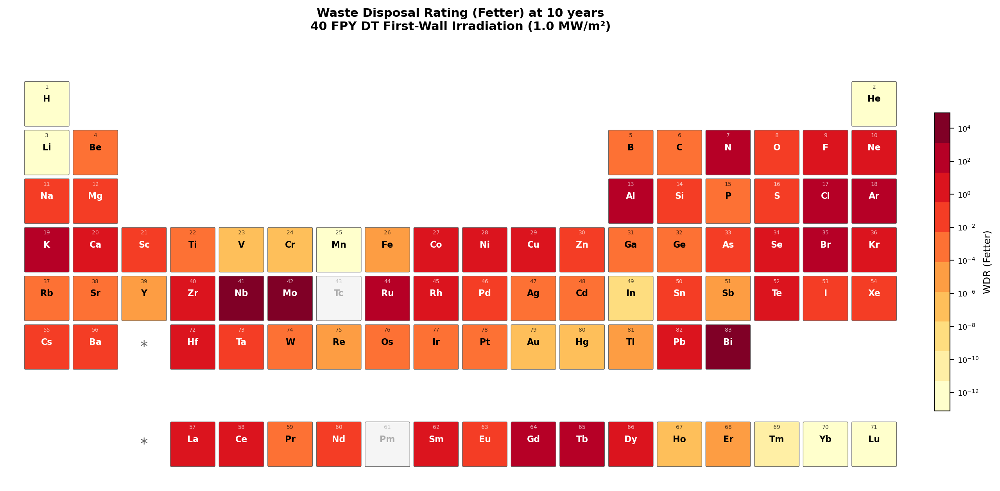
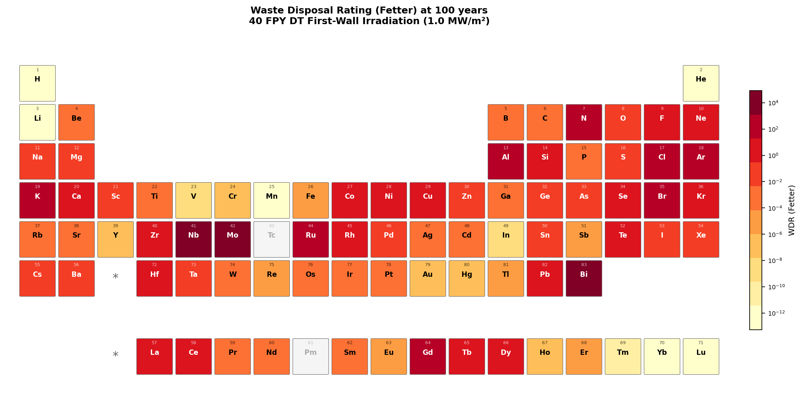
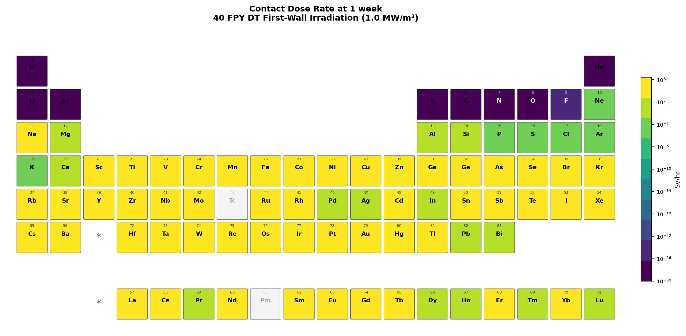
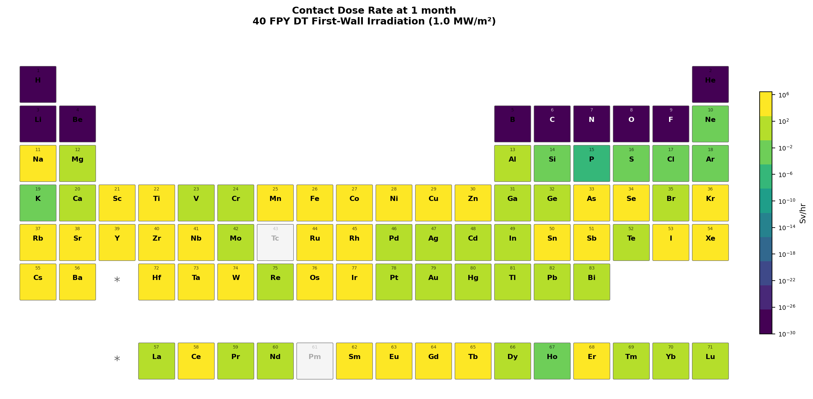
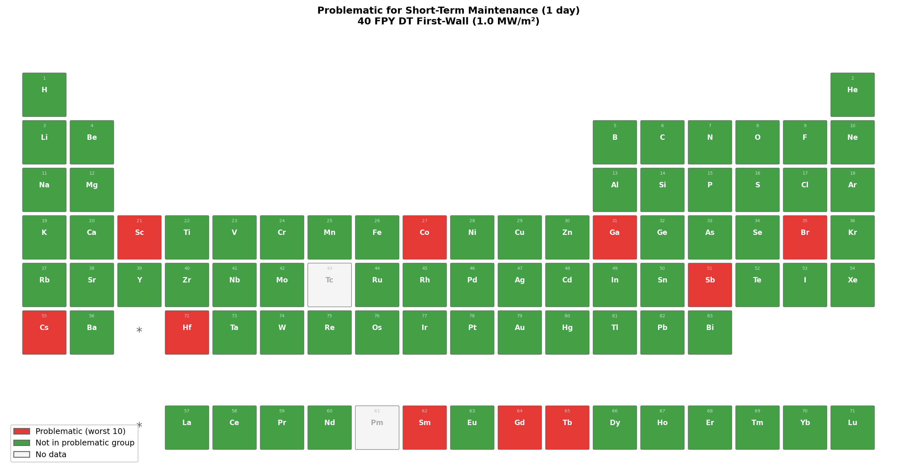
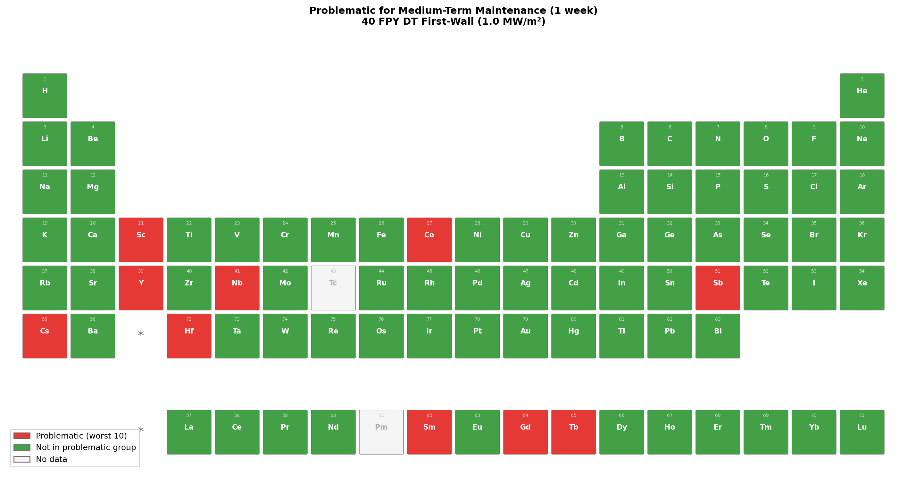
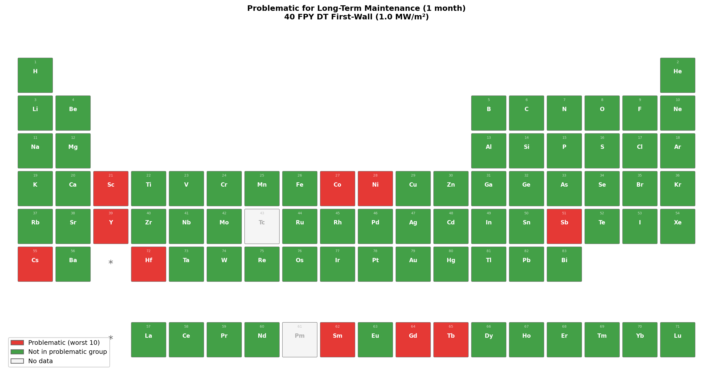
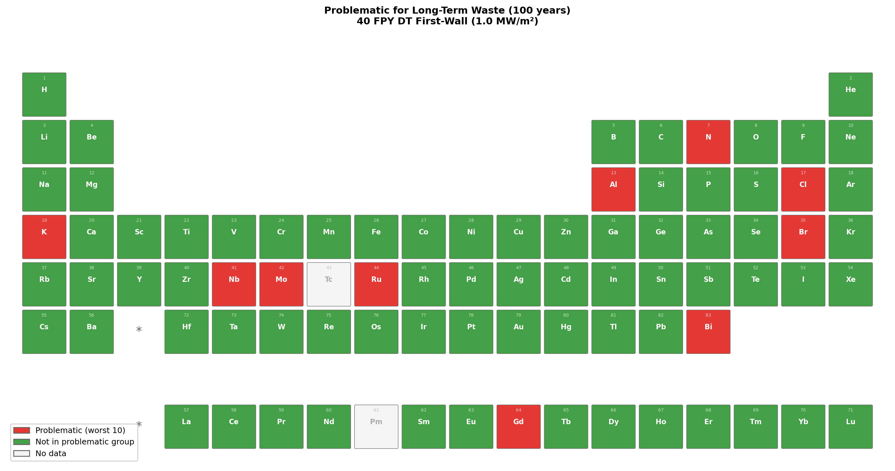

Figure 1: HCPB first-wall neutron spectrum used for the activation screening.
616 energy groups (LLNL-616 structure), spanning 10⁻⁵ eV to 20 MeV.
Figure 1: HCPB first-wall neutron spectrum used for the activation screening.
616 energy groups (LLNL-616 structure), spanning 10⁻⁵ eV to 20 MeV.Jonathan Shimwell
We present a systematic survey of neutron activation for all stable elements (Z = 1–83) under conditions representative of a deuterium-tritium (DT) fusion power plant first wall. Using OpenMC's transport-free material depletion capability, each element is irradiated with the HCPB first-wall neutron spectrum (LLNL-616 group structure) at 1 MW/m² wall loading for 40 full-power years, followed by cooling periods from shutdown to 100 years. We report waste disposal rating (Fetter limits) and photon contact dose rate (Sv/hr) at cooling times relevant to waste management and maintenance respectively, visualized as color-coded periodic tables. The results provide an open-source, reproducible screening tool for fusion material selection.
Structural materials in a DT fusion power plant are subjected to intense neutron irradiation dominated by the 14.1 MeV fusion peak. Transmutation of stable nuclei into radioactive products creates two practical challenges:
The concept of "reduced activation" structural materials was introduced in the late 1980s and has since guided the development of fusion-specific alloys such as V–4Cr–4Ti and SiC/SiC composites. The underlying principle is straightforward: avoid alloying elements whose isotopes produce long-lived or high-dose activation products under 14 MeV neutron irradiation.
The literature on fusion material selection can be broadly grouped into three categories.
Structural and thermo-mechanical assessments. A large body of work addresses the mechanical performance of candidate materials under fusion conditions — creep strength, irradiation hardening, ductile-to-brittle transition temperature shifts, helium embrittlement, and compatibility with coolants. Harries (1992) provided an early evaluation of reduced-activation options covering ferritic/martensitic steels, vanadium alloys, and SiC/SiC composites. Victoria et al. (2000) reviewed the development of low-activation materials at the European level, focusing on radiation damage mechanisms and alloy development for ferritic-martensitic steels (F82H, EUROFER97), titanium alloys, vanadium alloys, and SiC/SiC composites. Zinkle and Ghoniem (2000) gave an overview of materials research for fusion reactors covering mechanical property requirements and irradiation effects. More recently, Gorley (2015) assessed prospects for reduced-activation steels for fusion plant, and Şahin (2019) reviewed selection criteria for fusion reactor structures including DPA cross-sections, helium production, and thermo-mechanical performance of candidate alloys. Alba et al. (2022) surveyed materials for future magnetic confinement fusion reactors. While these works are essential for establishing which materials can survive the fusion environment, they generally do not present quantitative radiological screening — activity levels, contact dose rates, or waste disposal classifications are either absent or treated qualitatively.
Activation and inventory calculations. Noda (1988) was among the first to systematically screen elements for reduced activation under fusion neutron irradiation. The European Activation System (EASY) with the FISPACT inventory code has been used extensively for element-by-element activation surveys, and the UKAEA compilation (Gilbert et al., CCFE-R(16)36) provides the most comprehensive existing dataset of specific activity and contact dose rate for all stable elements under several fusion-relevant spectra. These surveys produce detailed inventory data (Bq/kg, Sv/hr) at multiple cooling times, but the results are typically presented as raw activity or dose values that require further interpretation to assess waste disposal implications. Furthermore, these calculations rely on closed-source inventory codes (FISPACT), making independent reproduction difficult.
Shutdown dose rate methods. A separate strand of work focuses on shutdown dose rate (SDR) analysis for specific reactor designs, coupling neutron transport with activation and photon transport. Palermo et al. developed the Advanced D1S method for SDR assessment of the European DCLL DEMO, and Bae et al. demonstrated SDR analysis with the Shift Monte Carlo code at ORNL. These are geometry-specific calculations for particular reactor designs rather than element-level screening tools.
Despite the breadth of existing work, there is a gap between elemental activation surveys that report raw activity (Bq/kg) and the actionable metrics that engineers need for material selection decisions: can this material qualify as low-level waste? and when can maintenance workers access this component?
In this work, we bridge that gap by combining element-by-element activation screening with two directly actionable metrics: waste disposal rating (Fetter limits, where a value below 1.0 means the material meets low-level waste criteria) and contact dose rate (Sv/hr). By mapping these onto color-coded periodic tables at timescales relevant to each metric — years to decades for waste, days to weeks for maintenance — we produce an intuitive visual tool that compresses the output of detailed inventory calculations into immediate design guidance.
A key differentiator of this work is that the underlying capabilities —
transport-free material depletion (Material.deplete(),
PR #3420), waste disposal
rating (Material.waste_disposal_rating(),
PR #3366), and contact dose
rate (Material.get_photon_contact_dose_rate()) — have been contributed to
OpenMC by the author of this report and are available to all users of the
open-source code. This means the entire analysis is fully reproducible and
transparent: anyone can inspect the methodology, verify the results, or extend
the study. Users can select their own continuous-energy cross section libraries
and depletion chain files, making it straightforward to repeat the analysis
with different nuclear data evaluations (e.g. TENDL, JEFF) or updated chain
files as they become available.
OpenMC version 0.15.3 development branch (commit 15786981) was used for this
analysis. OpenMC provides a Material.deplete() method that evolves nuclide
densities under an externally specified multigroup neutron flux without
requiring a full Monte Carlo transport simulation. Internally, the method:
MicroXS.from_multigroup_flux().PredictorIntegrator) with the IndependentOperator.This approach is well-suited for parametric activation studies where the neutron spectrum is known a priori and self-shielding feedback is negligible — conditions that hold for elemental screening.
Cross sections and depletion chain data are derived from the ENDF/B-VIII.0
nuclear data library. Pointwise neutron cross sections are used for spectrum
collapsing, and the depletion chain file (chain-endf-b8.0.xml) provides
the transmutation and decay pathways. The chain is reduced per element to
nuclides reachable within 5 transmutation steps from the element's natural
isotopes, balancing completeness against computational cost.
Each element (Z = 1–83, excluding Tc and Pm which have no stable isotopes, 81 elements total) is represented as a pure material at 1 g/cm³ with natural isotopic composition. Since contact dose rate (Sv/hr in the semi-infinite slab model) is independent of density in this transport-free framework, the density choice is arbitrary.
The irradiation parameters represent a generic DEMO-class fusion power plant first wall:
| Parameter | Value |
|---|---|
| Neutron spectrum | HCPB first-wall |
| Energy group structure | LLNL-616 (616 groups) |
| Wall loading | 1.0 MW/m² |
| Scalar flux | 4.4 × 10¹⁴ n/cm²/s |
| Irradiation time | 40 full-power years |
| Cooling times | shutdown, 1 h, 1 d, 1 wk, 1 mo, 1 yr, 5 yr, 10 yr, 50 yr, 100 yr |
The neutron spectrum is the HCPB (Helium-Cooled Pebble Bed) first-wall reference spectrum, shown in Figure 1. The spectrum exhibits the characteristic 14.1 MeV DT fusion peak, a broad scattered/evaporation component in the 0.1–10 MeV range, and resonance structure at intermediate energies.
Figure 1: HCPB first-wall neutron spectrum used for the activation screening.
616 energy groups (LLNL-616 structure), spanning 10⁻⁵ eV to 20 MeV.
Two quantities are computed at each cooling time:
Material.waste_disposal_rating() using
the Fetter limits (Fetter et al. 1990), which extend the US 10 CFR 61
methodology to fusion-relevant long-lived radionuclides. Plotted at
waste-relevant timescales: 1 year, 10 years, 100 years.Material.get_photon_contact_dose_rate(dose_quantity='effective'),
implementing the semi-infinite slab methodology with ICRP-116 dose
coefficients and a build-up factor of 2.0. Plotted at maintenance-relevant
timescales: 1 day, 1 week, 1 month.For each metric, the dominant contributing nuclide is also recorded.
Figures 2–4 show the waste disposal rating periodic tables at long-term cooling times relevant to waste management.
Figure 2: Waste disposal rating (Fetter limits) at 1 year cooling.

Figure 3: Waste disposal rating (Fetter limits) at 10 years cooling.
Figure 4: Waste disposal rating (Fetter limits) at 100 years cooling.Figures 5–7 show the contact dose rate periodic tables at maintenance-relevant cooling times.
 Figure 5: Contact dose rate (Sv/hr) at 1 day cooling.
Figure 5: Contact dose rate (Sv/hr) at 1 day cooling.

Figure 6: Contact dose rate (Sv/hr) at 1 week cooling.
Figure 7: Contact dose rate (Sv/hr) at 1 month cooling.The periodic table heatmaps reveal several patterns consistent with established reduced-activation knowledge:
Figures 8–13 identify the 10 most problematic elements at each timescale for maintenance dose and waste disposal.

Figure 8: Problematic elements for short-term maintenance (1 day).
Figure 9: Problematic elements for medium-term maintenance (1 week).
Figure 10: Problematic elements for long-term maintenance (1 month).Figure 11: Problematic elements for short-term waste (1 year).
Figure 12: Problematic elements for medium-term waste (10 years).

Figure 13: Problematic elements for long-term waste (100 years).Figure 14 combines all timescales into a single summary, showing elements that are problematic for waste disposal, maintenance dose, or both.
 Figure 14: Combined summary — elements problematic for waste (red),
maintenance dose (orange), or both (dark red) across all timescales.
Green elements are never in the problematic group for either metric.
Figure 14: Combined summary — elements problematic for waste (red),
maintenance dose (orange), or both (dark red) across all timescales.
Green elements are never in the problematic group for either metric.
The choice of different timescales for each metric reflects their distinct practical relevance:
Tables 1 and 2 show the waste disposal rating, contact dose rate, and dominant contributing nuclides for key structural and alloying elements at 1 year and 100 years cooling.
Table 1: Dominant nuclides at 1 year cooling.
| Element | WDR | Dominant (WDR) | Dose (Sv/hr) | Dominant (dose) |
|---|---|---|---|---|
| Fe | 2.80e-05 | Co-60 | 2.41e+03 | Mn-54 |
| Cr | 3.63e-08 | Ar-39 | 2.70e+00 | Mn-54 |
| W | 5.43e-04 | Hf-182 | 3.44e+02 | Ta-182 |
| V | 1.01e-07 | Ar-42 | 1.16e-01 | Sc-46 |
| Ti | 7.07e-04 | Ar-39 | 5.95e+02 | Sc-46 |
| Ni | 9.02e-01 | Ni-59 | 4.54e+04 | Co-60 |
| Co | 6.29e-01 | Ni-59 | 2.27e+06 | Co-60 |
| Mo | 4.21e+03 | Tc-99 | 1.23e+01 | Y-88 |
| Nb | 8.34e+04 | Nb-94 | 3.41e+02 | Nb-94 |
| Ta | 4.06e-02 | Hf-182 | 2.76e+03 | Ta-182 |
| Cu | 6.37e-01 | Ni-63 | 1.18e+04 | Co-60 |
| Al | 1.02e+02 | Al-26 | 9.85e-01 | Na-22 |
| Si | 2.97e-01 | Al-26 | 7.73e-03 | Na-22 |
| Mn | 5.43e-13 | Ar-42 | 3.06e+04 | Mn-54 |
Table 2: Dominant nuclides at 100 years cooling.
| Element | WDR | Dominant (WDR) | Dose (Sv/hr) | Dominant (dose) |
|---|---|---|---|---|
| Fe | 6.55e-06 | Ni-59 | 3.81e-04 | Co-60 |
| Cr | 2.31e-08 | Ar-39 | 6.12e-08 | K-42 |
| W | 5.43e-04 | Hf-182 | 1.59e-06 | Ta-182 |
| V | 1.43e-08 | Ar-42 | 7.80e-07 | K-42 |
| Ti | 4.61e-04 | Ar-39 | 1.06e-03 | K-42 |
| Ni | 8.08e-01 | Ni-59 | 9.74e-02 | Co-60 |
| Co | 3.38e-01 | Ni-59 | 5.02e+00 | Co-60 |
| Mo | 4.18e+03 | Tc-99 | 1.10e+00 | Nb-91 |
| Nb | 8.31e+04 | Nb-94 | 2.42e+02 | Nb-94 |
| Ta | 4.06e-02 | Hf-182 | 1.11e-04 | Ta-182 |
| Cu | 4.32e-01 | Fe-60 | 2.56e-02 | Co-60 |
| Al | 1.02e+02 | Al-26 | 2.50e-01 | Al-26 |
| Si | 2.97e-01 | Al-26 | 7.04e-04 | Al-26 |
| Mn | 7.09e-14 | Ar-42 | 4.22e-12 | K-42 |
Notable observations:
The periodic table heatmaps directly inform alloy design by providing a waste disposal penalty for each element. For example, if element A has a waste disposal rating of 1000 and element B has a rating of 1, then even a small fraction of A in an alloy will dominate the waste classification. This framing is immediately actionable for metallurgists selecting alloying additions.
Impurity specifications are also highlighted: trace elements like Co and Ag, even at ppm levels, can dominate long-term activation. The maps make this visually clear and may support more stringent impurity specifications for fusion-grade materials.
We have demonstrated a systematic, open-source approach to fusion material activation screening using OpenMC's transport-free depletion capability. The element-by-element periodic table visualization provides an intuitive tool for material selection that:
The scripts and data are provided as supplementary material. Users can regenerate the analysis with different spectra, irradiation conditions, or nuclear data libraries by modifying the input parameters.
# 1. Generate elemental activation data (test: 10 elements)
python generate_data.py --test \
--chain /path/to/chain-endf-b8.0.xml \
--cross_sections /path/to/cross_sections.xml \
--spectrum hcpb_fw_616.txt
# 2. Plot the input spectrum
python plot_spectrum.py
# 3. Generate periodic table visualizations
python plot_periodic_table.py
# Full run (all 81 elements):
python generate_data.py \
--chain /path/to/chain-endf-b8.0.xml \
--cross_sections /path/to/cross_sections.xml \
--spectrum hcpb_fw_616.txt
python plot_periodic_table.py
Requirements: OpenMC >= 0.15.3, numpy, matplotlib, ENDF/B-VIII.0 cross sections and depletion chain, HCPB-FW spectrum file.
Other neutron spectra are available from the
reference input spectra
and can be used in place of the HCPB first-wall spectrum by passing a different
file to the --spectrum argument.
Items to resolve before finalising: